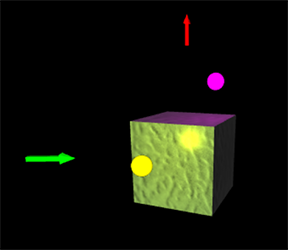

attach_light()¶
attach_light creates a local_light and binds it to a moving object.
- attach_light(ball, offset=vec(3, 0, 1), color=color.green)¶
- Parameters:
firstargument (object) – Object to which to attach the local_light (ball in example above).
offset (vector) – Displacement of light from the center of the moving object. Default <0,0,0>.
color (vector) – Default is the color of the object to which the light is attached.
It is possible to attach more than one light to an object.
The offset may be thought of as an invisible rigid rod connecting the moving object and the local_light, so if the object rotates the local_light will rotate around the moving object.
If you specify a zero offset for a sphere, you will find that the local_light does not affect the lighting of the outer surface of the sphere; it does of course affect the lighting of objects outside the sphere. In this case you may wish to specify ball.emissive = True, which makes the ball seem to glow.
See also